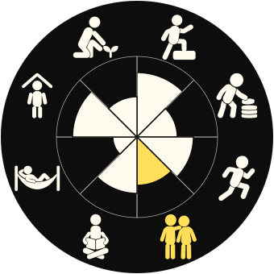
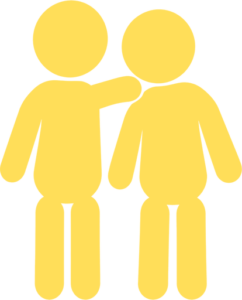

A life audit for the friend everyone counts on.
You remember your people’s plans. Take a look at your own, across work, rest and everything else that fills the week.
About 8 minutes. Free to take.
The rest of your life
Work has been taking most of your time. A friend asks how things are. You tell them about work.
The audit looks at all 8 areas before you choose one. Your answers make a wheel, so the rest of your life gets a place in the conversation.
An example wheel, from fictional answers.
Relationships is the chosen focus.

A review in 5 parts
About 52 answers, mostly a single tap. First, one question about what has you taking stock.
Where things are
4 statements for each of the 8 areas. Think about the last 4 weeks.
How it’s going
A check at the end of each area, from going well to not where you want it.
What matters this quarter
Choose up to 3 areas you want to give attention to.
Who’s in it with you
6 statements about the people around your goals.
Your one thing
Choose a goal, a first step, a day and who gets to see it.
Work, in your own words
Example statements. Think about the last 4 weeks.
- I moved forward on work I actually care about.
- Work stayed inside its hours most days.
- Work kept eating into my personal time.
- Most of my week went on work I’m trying to leave behind.
The people in the plan
Someone could name a goal I’m working on.
The audit asks who knows your goals, who checks in and who you tell when things slip. Your answers become a short circle read.
Example circle read
The checking pair
Someone knows a goal you are working on. Someone has also asked how it was going, without you doing the reminding.
Based on fictional answers.

A note on the method
Each slice averages 4 statement answers and the end-of-area check. Statements about costs count in reverse. At least 3 answers draw an area. Skips stay missing.
Of the areas that matter this quarter, we suggest the lowest reading and say why. If you pick none, we use the lowest on your wheel. You can choose another.
This is a reflection tool, with no overall life grade or comparison with other people.
Your result and your email
Your wheel, suggested focus and one area read are free. First name and email open the rest of your result. Your answers are private by default; you choose what your people see.
Work and direction
Think about the last 4 weeks.
I moved forward on work I actually care about.
This preview ends at the first question.